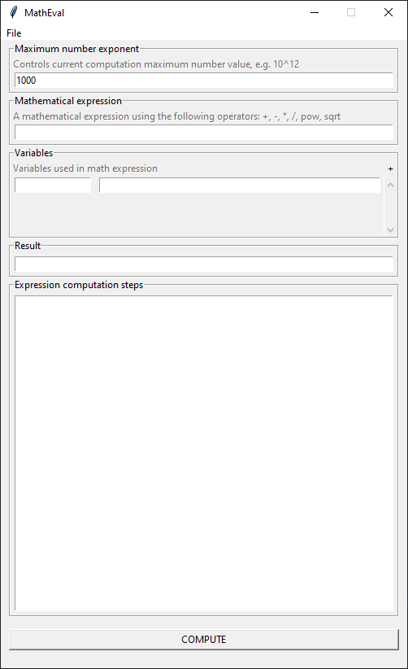

Components
The application is build from multiple components, every one of them with a well defined role. As a generic overview, the first component that user interacts with is the GUI, that reads the input from the fields or from the XML file and then sends it to the expression parsers component that interacts with the big number in order to compute the expression. After the expression is computed the result is returned to the user to be desplayed in GUI or written to file.
GUI Component
The component is responsible with all the I/O operations between the user and the application. There a two ways of interacting with the GUI:
directly through GUI input fields.
indirectly through XML files.
More details presented on how to run page.
{kind=link}
Backend interaction. The interaction between backend and the frontend is made using the class BackendBridge defined in ui_bridge.py, using the two methods available:
method
exponent(...)that implements a getter for the internal exponent data field used to populate fieldExponenton initialization.method
compute_data(...)that calls the needed backend method in order to compute the math expression provided.
Input validation. The input is always readed directly from the GUI fields, so there is a uniform way of validating data before sending it to the backend. Because of this, when an XML is loaded, the actual data is first set into the GUI fields in order to be readed leater. The actual data validation is made for every field in the associated setter/getter methods.
Data constraits. Every field has some basic constraints in order to verify the input data as follows:
field Exponent: expects a non-zero unsigned integer.
field Expression: expects a non-empty arithmetic expression that contains only the alphanumeric characters and the characters
+-*/()^%.field Variable Name: expects a non-empty string of length 1 that matches the character set
[a-zA-Z]field Variable Value: expects a unsigned integer smaller the maximum number defined by the exponent.
Expression Parser Component
This class takes care of parsing and solving mathematical expressions, respecting the mathematical order of operations and offering a simple interface.
It has 3 components: tokenizer, parser and solver. The overwhelming majority of compilers and parsers implement this approach making it a well-known solution throughout the decades.
I. Tokenizer
The first step in any expression parsing is the operation of tokenization on the input string. The tokenizer is a standard way of splitting the input in several smaller pieces, that are logically grouped in tokens. In the current implementation, a token can have any of the following types:
Number: any piece of text that contains only ascii digits in a consecutive order;
Variable: an identifier, must start with a letter followed by letters and digits;
Sqrt: an ident that spells the word sqrt.
Double star: any consecutive characters that are double stars;
Plus, minus, slash, star, percent, open paren, closed paren: the corresponding characters, always has the size of 1;
End: this token is found only once in the token stream and it marks the end of the stream. It is generated by the tokenizer and it doesn’t actually point to a valid location in the input string.
Spaces (including newlines, tabs and unicode defined spaces) are ignored by the tokenizer, as they do not offer any information to the next steps of the process and are supported just for convenience of the user.
The tokenizer will also reject any characters that it finds and are invalid for a mathematical expression. At this point, the tokenizer will throw an exception when it finds any such invalid character that will tell that it’s invalid, but it won’st tell any other information. It might be desirable in the future to add a more descriptive error to this exception or even rework the error mechanism.
II. Parser
After the tokenizer is finished and completes successfully, its output is taken by the parser; this is a python array containing the token objects.
The parser will try to make sense of it, not unlike what compilers for most programming languages do. It will check for the next token in the series and construct an apropriate structure for that place in location.
The output of the parser is a tree that can be made out of several nodes, each node representing an operation in the expression. The following node types exist at this moment:
NumericExpr: hosts a literal(hardcoded) number value; it corresponds to the number token type from the lexer;
VariableExpr: contains the name of the variable that is used in the expression. The name is not checked if it exists in the variables list at this point, and can be any string that matches the requirements for the ident token;
UnaryExpr: represent a unary operation - an operation that takes only one parameter. The unary operations are described in the enum UnaryOperator. The only unary operation existing at this point is the square root;
BinaryExpr: represents a binary operation - an operation that that is composed of two expressions and an operator that specified the behavior. The operators are described in the BinaryOperator enum;
To figure the order operation on a depth level for the binary operations, the parser uses a relatively simple algorithm that searches of the lowest priority operator, splitting the expression in two around that operator.
The parser checks at every point it can that the expression is correct and will throw a number of exceptions if it detects an invalid expression. An invalid expression can be an expression that has a different number of open and closed parens, a unary or binary operation that doesn’t terminates, etc. The parser will also check for unreachable code and will assert if any such code gets to be executed.
III. Solver
In addition to the lexing and parsing phases that at the end produce a tree representing the original input string, a third step is needed, the one where the expression is actually solved.
The solver needs two things as its input: the root of the expression tree, and a dictionary representing the names and the values of the variables. The only requirements for this dictionary are that it contains all the variables used in the expression and its values are the same number type that the lexer has been initialized it. Having more variables in the dictionary is not an error, but having less is.
The role of the solver are to solve the equation, generating a single result value and generating the steps that were needed to generate that value.
The solver will do multiple iterations until the final single result is ready. At every iteration, the solver will try to calculate the leftmost operation that has all its arguments known. At the end of each iteration, the solver will generate a human readable string of the current state of the partially solved equation.
Example:
2 ** (1 + 2 * x - 3 / sqrt y) => original expression
(2 ** ((1 + (2 * x)) - (3 / sqrt y))) => the expression showing the tree order of arguments
(2 ** ((1 + (2 * 2)) - (3 / sqrt y))) => x=2 was replaced in 2 * x
(2 ** ((1 + 4) - (3 / sqrt y))) => 2 * 2 = 4
(2 ** (5 - (3 / sqrt y))) => 1 + 4 = 5
(2 ** (5 - (3 / sqrt 9))) => y=3 was replaced
(2 ** (5 - (3 / 3))) => 3 / 3 = 1
(2 ** (5 - 1)) => 5 - 1 = 4
(2 ** 4) => 2 to the power of 4 = 16
16
In the end, the result and the string with the steps are returned.
Big Number Component
This class represents a custom implementation that operates with big numbers, which are stored internally in an array for fast operations.
There is a standard soft limit of 1000 digits per number regarding the output of the operations, but also the intial value attributed to a BigNum instance, which can be modified by the user.
This class implements all basic operations that would be needed in calculating an expression, and can take either an int or a string as input in the constructor.
The internal representation of a BigNum is an array of Base10 digits, stored in reverse order, which help the implemented algorithms for faster calculations without intermediary steps regarding the data representation.
This class is used by the Expression Parser component for evaluating parsed expressions.
- Operations:
The following operations are implemented by BigNum:
__add__ (Addition):
This function performs direct addition of the arrays representation of each instance, which is stored in the internal array of the returned value.
This addition is performed value by value of each coresponding index, keeping the carry for the next index addition.
Postcondition: An assert is used that checks the resulted value is bigger that both inputs.
__sub__ (Substraction):
This function performs direct substraction of the arrays representation of each instance, which is stored in the internal array of the returned value.
This substraction is performed value by value of each coresponding index, while also taking into acount a remainder, which is substracted from the next index substraction value.
Precondition: An exception is thrown if the substracted value is bigger than the value from which it’s being substracted, which would yield a negative result, which is not supported.
Postcondition: An assert is used that checks the resulted value is smaller or equal than the initial value.
__mul__ (Multiplication):
This function performs direct multiplication of the 2 internal arrays, which is stored in the internal array of the returned value.
This multiplication is performed via a double for loop, in which each value in the array of the first element is multiplied by every value in the second, which is then added to the coresponding index value in the result array, with the carry being added over to the next one.
Postcondition: An assert is used that checks that at least one of the values is less or equal than the result.
__pow__ (Power):
For this operation, we used a recursive method of an algorithm known as exponentiation by squaring, which takes advantage of the BigNum representation for calculations in this case.
In this algorithm, the basic idea is to square the first operand, and divide the power by 2, which we recursively pass as arguments to the function that returns the calculated value.
Postcondition: An assert is used to validate that the result is bigger than the first operand, excepting a power of 0 or 1.
__mod__ (Modulo):
For this operation, we used a simple mathematic formula to calculate the modulo of the operands, by using substraction, division and multiplication operations, while taking advantage of the BigNum representation and implemented operations.
Precondition: An exception is thrown if the modulus is not bigger than 0.
Postcondition: An assert is used to validate that the result (remainder) is less than the modulus operand.
__floordiv__ (Floor/Integer Division):
For this operation, we implemented an algorithm that calculates integer division with remainder.
In this algorithm, we divide the values via multiple repeated substractions at each step, which finally leaves us with a remainder, and the quotient, which is the returned value.
Precondition: An exception is thrown if the divisor is 0.
Postcondition: An assert is used to verify that the result is correct, by validating that the quotient multiplied by the divisor plus the remainder is equal to the dividend.
sqrt (Square Root):
For this operation, we implemented an algorithm that calculates square root by long division.
This algorithm involves a series of multiple steps that calculate the square root digit-by-digit, by taking advantage of the decimal place value system. (reference)
For this algorithm we also implemented a binary search method for fast calculation of the square root used on 2 digit numbers, used at the start of this algorithm.
The returned value of this operation is an integer aproximation of the result, since we only work with integers.
Postcondition: An assert is used to validate that the result squared is less or equal than the input, and that (result + 1) squared is strictly bigger than the input.
- Other Methods:
__str__ (String Representation)
This method returns the string representation of the number, in Base10.
exponent
This is a class method used to set/get the maxium digits limit.